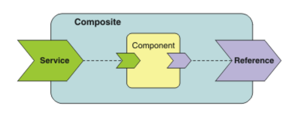

Products
This section is divided into two subsections and outlines all products that make up Finshape’s value proposition. A value proposition describes the goods and services a company offers and explains why they are valuable to customers. Alongside the product descriptions, the section also includes a technical subsection that details the elements and components underlying Finshape’s products.
We offer to our clients three standalone products (solutions), some add-ons components that provide advanced features in addition to the Core Digital Banking solution, and services. Standalone means that product may be delivered to a client on the Project level and doesn't depend on other DBOS components.

- Is it a standalone product, service, or add-on?
-
What benefits it brings to the client?
-
Which elements and components it consists of from the technical point of view
- Digital Identity
- Digital Identity is a product that provides centralized authentication, session management, and OpenID Connect–based security for all connected banking systems. It ensures secure user login, unified session handling, and consistent identity governance across channels. This product is delivered through the DBOS component called Digital Identity (GAAS).
- Authentication and Authorization solution
- The authentication and authorization is a product (solution) that provides a comprehensive, secure, and scalable service: identity, access, and operational governance across the entire digital banking system. This product is delivered through the DBOS components Digital Identity (GAAS) and GEN (Entitlements), Admin Console (WAC) and Login applications for bank clients and bank employees.
- Core Digital Banking solution
- The Core Digital Banking is a product provides the essential capabilities required to deliver core digital banking services, including secure customer operations, integration with existing bank systems, and support for additional banking functionalities. These functionalities include storing and providing data, executing transactions, and performing product-related actions, all supported through a unified integration layer. This product is delivered through Authentication and Authorization solution along with other key components: Instant Data (GDS), Payments and Instructions (TPM), Integration Hub (IHUB), Service Proxy (SPX), Admin Console (WAC), Login application and Workspace GUI applications for bank clients and bank employees.
- PSD2 Support Service
- PSD2 Support Service is an optional add-on to the Core Digital Banking solution that delivers the mandatory functionality required for PSD2 compliance within the EU. It enables secure access for licensed third-party providers, manages customer consents, and ensures proper registration and handling of third-party entities. The service consists of three core components: OpenBank for exposing PSD2-compliant APIs, ConsentReg for managing and storing customer consent, and TpReg for registering and maintaining third-party provider information.
- Desktop Internet Banking application
- Desktop Internet banking application is an optional add-on to the Core Digital Banking solution. It's a web application implementing the internet banking GUI where a bank employee operates the solution on behalf of a selected user.
- Mobile Internet Banking application
- Mobile Internet Banking application is an optional add-on to the Core Digital Banking solution. Mobile applications for iOS (iPhone) and Android smartphones implement a GUI for smartphone banking.
- Four Eyes
- The Four Eyes component is an optional add-on to the Core Digital Banking solution designed for corporate banking clients who require stronger internal control. It ensures that sensitive administrative actions are only executed after being reviewed and approved by a second authorized user, providing an extra layer of security and governance.
- Notification Centre (GNC)
- GNC is an optional add-on to the Core Digital Banking solution that manages and generates notifications for selected events, such as balance changes or specific account movements.
- Distribution (GDC)
- GDC is an optional add-on to the Core Digital Banking solution that handles the delivery of notifications to clients, ensuring that alerts and messages generated by the bank’s systems are reliably sent through the configured communication channels.
- Exchange rates (XCR)
- XCR is an optional add-on to the Core Digital Banking solution that provides exchange rate information for foreign currency operations and supports currency-dependent business rules, such as currency limits or thresholds.
- Experience builder (EXB)
- EXB is an optional add-on to the Core Digital Banking solution that stores user-specific data for web or mobile applications, such as personalized dashboard settings or other custom user preferences.
- Document Generation Service
- The Document Generation Service is an optional add-on to the Core Digital Banking solution that enables the automated creation of various banking documents, such as contracts, statements, and confirmations. It ensures that documents are produced accurately, consistently, and in a fully digital form, supporting both customer-facing and internal processes. The service consists of two components: Print Server (GPS), which handles the actual document generation, and SIDER, a technical extension that allows large or complex documents to finish processing in the background even after the user logs out.
- Client Support
- Product support is a service that consists of: onboarding for banking employees etc.
- Maintenance service
- Maintenance is a service that consists of services related to products' updates, health checkups etc.